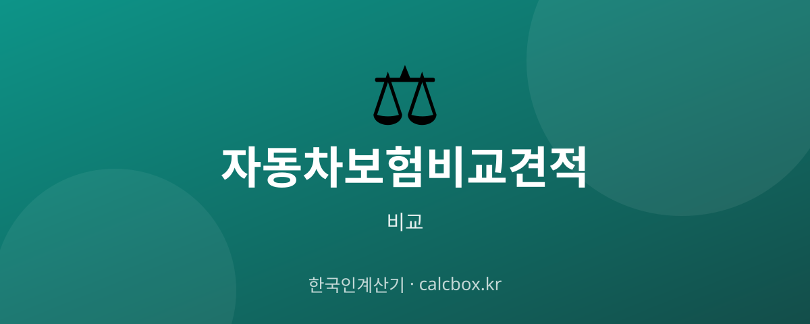

자동차보험 비교견적 — 보장 항목·특약 중심으로 비교하는 법
자동차보험은 보험료만 보고 고르면 정작 사고 때 부족할 수 있습니다. 보장 항목과 특약을 어떻게 비교해야 손해 없이 고를 수 있는지, 담보 관점에서 정리했습니다.

자동차보험 보장·특약, 왜 비교가 중요할까?
자동차보험 비교의 핵심은 보험료뿐 아니라 어떤 보장을 얼마나 담고 있는가입니다. 같은 값이라도 담보 구성이 다르면 사고 시 부담이 크게 달라집니다.
대인·대물 같은 기본 담보와 자기차량손해, 운전자 범위, 각종 특약을 함께 비교해야 실속 있는 선택이 됩니다.
비교할 때 꼭 봐야 할 항목
- 대인배상 — 타인의 신체 피해를 보상하는 담보입니다. 의무보험(대인 I)과 임의보험(대인 II) 한도를 확인하세요.
- 대물배상 — 타인의 재물·차량 피해를 보상합니다. 고가 차량 사고에 대비해 한도를 충분히 두는 것이 좋습니다.
- 자기신체·자동차상해 — 본인·동승자의 상해를 보장합니다. 자동차상해(자상)로 보장을 넓히는 경우가 많습니다.
- 자기차량손해(자차) — 내 차량 손해를 보상합니다. 자기부담금 수준과 함께 확인하세요.
- 특약(운전자 범위·마일리지 등) — 운전자 한정, 마일리지·블랙박스·안전운전 특약 등을 잘 챙기면 보험료를 줄일 수 있습니다.
- 긴급출동 등 부가 서비스 — 긴급출동 특약 등 부가 서비스 포함 여부와 범위를 확인하세요.
최신 정보 비교하는 법
여러 보험사의 보장·보험료는 손해보험협회 '보험다모아(보험다모아, e-insmarket.or.kr)'에서 같은 조건으로 비교할 수 있습니다.
담보별 한도와 특약의 세부 조건은 각 보험사 다이렉트 공식 사이트·약관에서 확인하세요.
보험료가 낮은 견적은 담보나 특약이 빠졌을 수 있으니 보장 항목을 나란히 대조하세요.
선택 요령
대물배상 한도와 자기차량손해는 사고 시 부담이 큰 항목이니 무리하게 줄이지 마세요.
운전자 범위를 실제 운전하는 사람에 맞게 좁히고, 마일리지·블랙박스 특약을 챙기면 보장을 유지하면서 보험료를 줄일 수 있습니다.
자주 묻는 질문 (FAQ)
Q. 자동차보험에서 꼭 챙겨야 할 보장은 무엇인가요?
대인·대물 배상은 기본이고, 특히 대물 한도는 고가 차량 사고에 대비해 충분히 두는 것이 좋습니다. 내 차 수리를 위한 자기차량손해, 본인·동승자 보장을 위한 자동차상해도 많이 선택합니다.
Q. 보험료를 줄이면서 보장은 유지하는 방법이 있나요?
운전자 범위를 실제 운전자에 맞게 한정하고, 마일리지·블랙박스·안전운전 특약을 활용하면 보장을 유지하면서 보험료를 낮출 수 있습니다. 반대로 대물·자차를 무리하게 줄이면 사고 때 부담이 커집니다.
Q. 보장 조건은 어떻게 비교하나요?
보험다모아 등에서 같은 조건으로 조회한 뒤, 담보별 한도와 특약 포함 여부를 나란히 대조하세요. 보험료만 낮은 견적은 담보가 빠져 있을 수 있으니 보장 항목을 함께 확인해야 합니다.